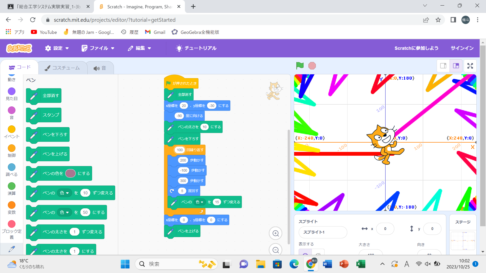
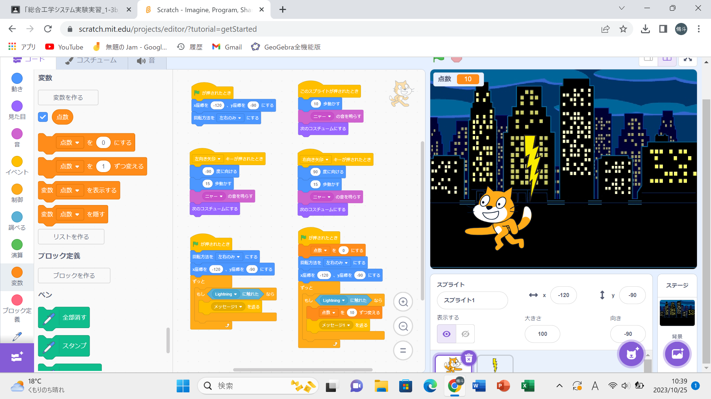

1週目のレポート ： 公大高専１年実習I-1
1-3-b班28番 H-しゅうと
第1週目
1-1 サイエンスアート

1.内容
スクラッチを使って線を書くプログラムを作成した。 猫の周りにギザギザが並ぶようなプログラムにした。
2.感想
座標や角度、回す回数、動く向きなどを少し変えるだけでまったく新しいアートになる。 色々試すことが出来てとても楽しかった。
1-2 ゲーム

1.内容
夜の街に雷が落ちてくるゲームにした。 もし、ずっとブロックを使うことで雷に当たった時にポイントが入るようにプログラムした。 乱数ブロックを使うことで雷がどこに落ちるのかが分からない。
2.感想
本当にあるゲームのように仕上がった。 ほとんど同じようなブロックを作成するときには一つ作ってから、 それを複製し変えることによってすぐに完成する。 猫の鳴き声や大きさも変えれるということがまた新たに分かった。
1-3 ホームページ作成
私のホームページ
1.内容
自分の趣味や入っている部活、自分の特徴などを書いた。
2.感想
先生が作成した文をコピーし、編集した。 ここでまた新たに使い方を学んだ。 簡単に編集出来て楽しかった。